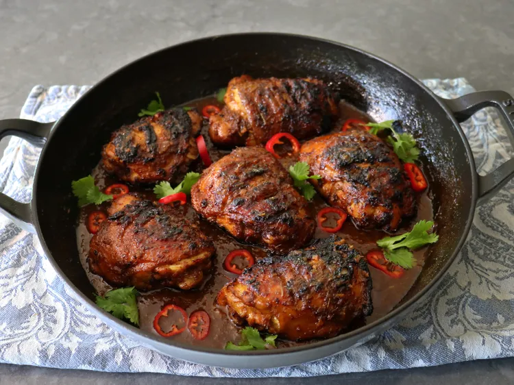

Home
Ayam Bakar

Ayam Bakar is a popular Indonesian grilled chicken dish, known for its smoky flavor and aromatic spices. It is often served with rice and a side of sambal for an extra kick.
Ingredients
- 1 whole chicken, cut into pieces
- 4 cloves garlic, minced
- 2 shallots, minced
- 2 tablespoons soy sauce
- 1 tablespoon tamarind paste
- 1 tablespoon brown sugar
- 1 teaspoon turmeric powder
- 1 teaspoon coriander powder
- 1 teaspoon cumin powder
- Salt and pepper to taste
- 2 tablespoons vegetable oil
- Fresh lime leaves (optional, for garnish)
Instructions
- In a large bowl, combine minced garlic, shallots, soy sauce, tamarind paste, brown sugar, turmeric, coriander, cumin, salt, and pepper. Mix well to create a marinade.
- Add the chicken pieces to the marinade, ensuring they are well coated. Cover and refrigerate for at least 2 hours, preferably overnight for better flavor.
- Preheat your grill or barbecue to medium-high heat.
- Remove the chicken from the marinade, allowing excess marinade to drip off. Brush the chicken pieces with vegetable oil to prevent sticking.
- Place the chicken on the grill and cook for about 15-20 minutes on each side, or until the chicken is cooked through and has a nice char. Baste with any remaining marinade during grilling for added flavor.
- Once cooked, remove the chicken from the grill and let it rest for a few minutes.
- Serve hot, garnished with fresh lime leaves if desired. It pairs well with steamed rice and a side of sambal for those who enjoy a spicy kick.
Notes
Ayam Bakar can be customized with different spices and herbs according to your taste. You can also use a whole chicken or just chicken parts, depending on your preference.